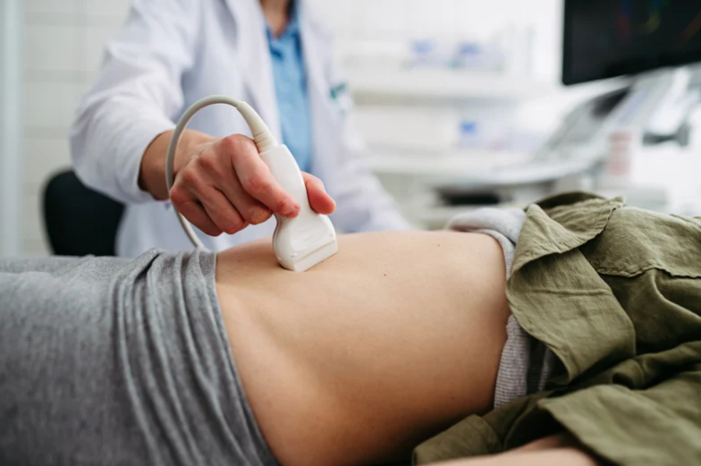
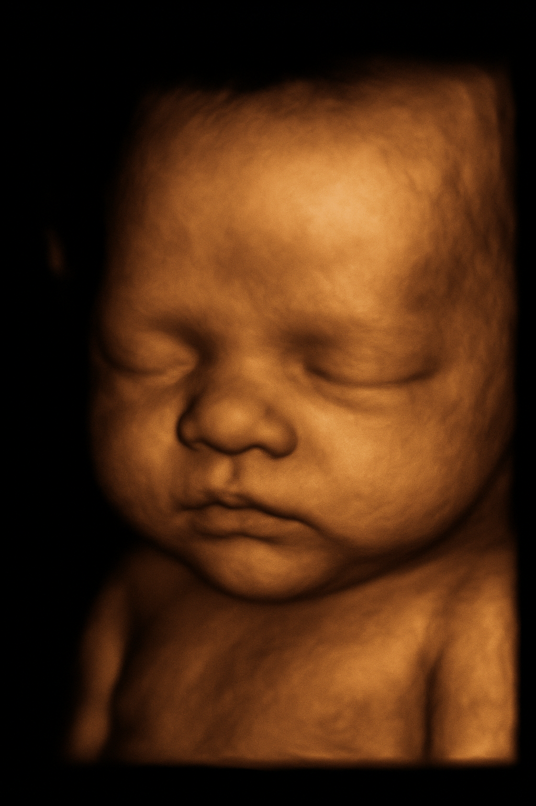
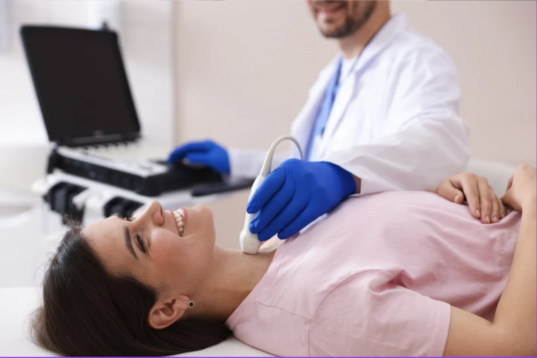
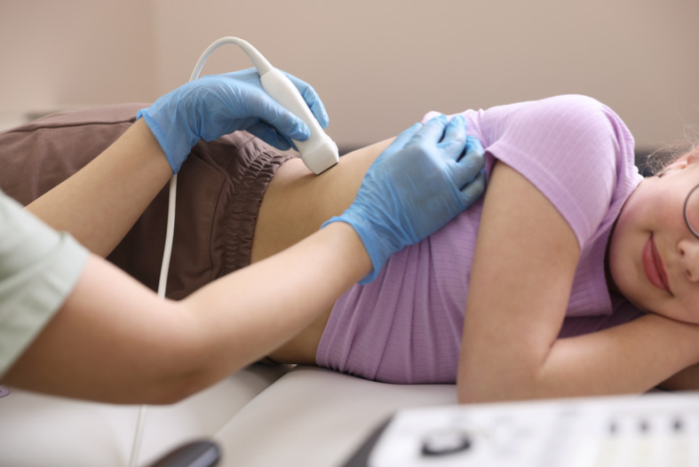
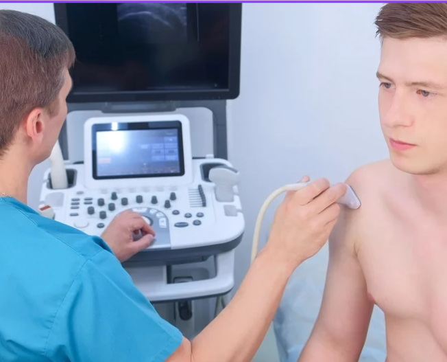

Estudios de ultrasonido disponibles

Ultrasonido abdominal
Hígado, vesícula, vías biliares, páncreas, bazo, riñones.
Ideal para dolor abdominal, inflamación, cálculos u otros síntomas digestivos.

Ultrasonido pélvico / ginecológico
Útero, endometrio, ovarios y anexos.
Útil en reglas irregulares, quistes ováricos, miomas y control de DIU.

Ultrasonido obstétrico / 4D
Control del embarazo con imagen 2D y 4D.
Valoración de crecimiento, líquido amniótico, placenta y bienestar fetal.
Ultrasonido mamario
Estudio complementario a la mastografía.
Revisión de nódulos, quistes, dolor mamario o cambios en la exploración.

Ultrasonido tiroideo
Glándula tiroides y ganglios cervicales.
Detección de nódulos, bocio, tiroiditis y cambios en el control hormonal.

Ultrasonido renal y de vías urinarias
Riñones, vejiga y próstata (en hombres).
Cálculos, infecciones urinarias recurrentes, problemas para orinar.

Ultrasonido Doppler
Arterial, venoso y obstétrico.
Valora la circulación sanguínea en venas, arterias y embarazo de alto riesgo.

Ultrasonido musculoesquelético
Hombro, rodilla, tobillo, manos y otras articulaciones.
Tendinitis, desgarros, derrames articulares, quistes y lesiones deportivas.

Otros ultrasonidos
Consulta por otros estudios disponibles.
Contáctanos por WhatsApp para revisar tu caso y recomendarte el estudio más adecuado.